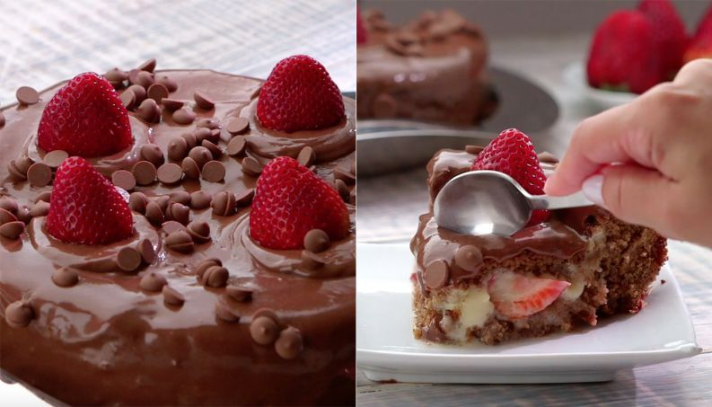

Eu e minha amiga Sofia estavamos nos programando para realizarmos a feira de empreendedorismo da nossa escola, nós tinhamos uas opções de sobremesas para fazermos.
Decidimos então fazer o bombom de uva no pote e o bolo de morango coberto de chocolate.
Fizemos o bombom de pote de uva e foi um sucesso.
Tivemos um problema com o bolo de morango e tivemos que pensar se desistiriamos ou fariamos outra coisa.

Fizemos a torta de morango e foi um sucesso. Vendemos todos os bombons de pote e todas as tortas.
Desistimos de fazer o espetinho de morango pois estragaria muito rápido.